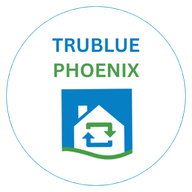

TruBlue Guestimator
Open GuestimatorOne time only: save the TruBlue icon
Then use the icon every day. If it asks you to sign in, use your TruBlue email.

One time only: save the TruBlue icon
Then use the icon every day. If it asks you to sign in, use your TruBlue email.